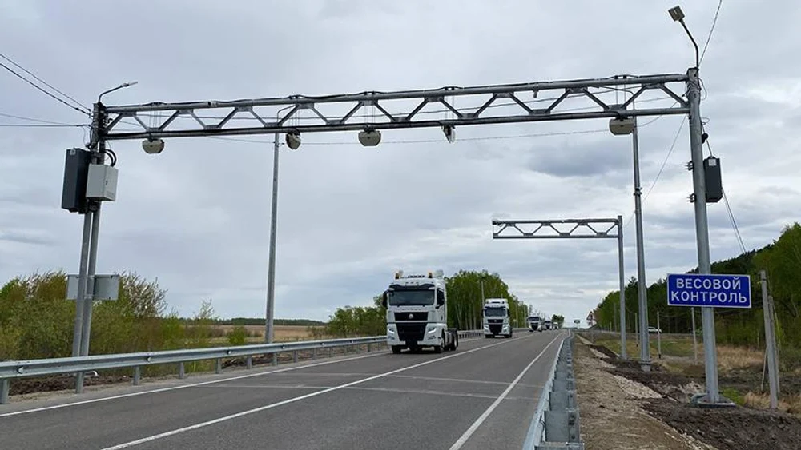
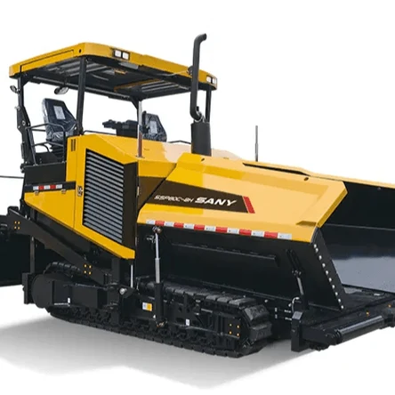
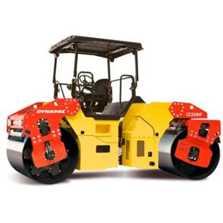

Объекты

Несколько работ из портфолио
Полная галерея с комментариями по каждому объекту — в разделе «Наши работы».

Ремонт дорог в Дзержинском районе Новосибирска
Производство работ по ремонту
Объект ТУАД, региональная сеть

Укладка смеси асфальтоукладчиком

Уплотнение покрытия катком Dynapac CC224
Своя смесь с АБЗ — выезд в день обращения